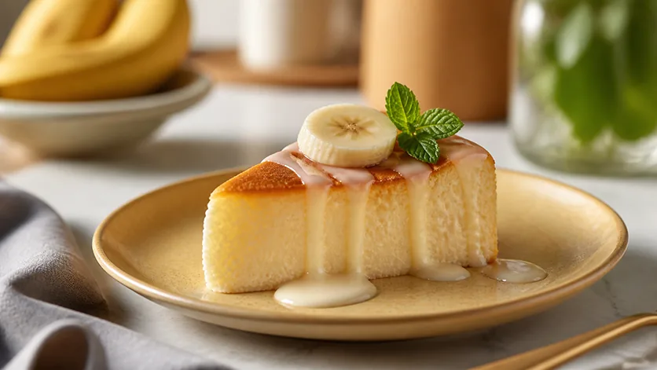

Десерты · 26–28 минут
Банановый чизкейк-суфле
Нежнейшая кремовая текстура суфле, натуральная сладость банана и идеальная плотность благодаря кукурузному крахмалу. Без лишней влаги в тесте. Всего 122 ккал на 100 г!
К ингредиентам
Ингредиенты · 4 порций
- Творог обезжиренный («Красная цена» 0%) — 360 г (2 пачки)
- Греческий йогурт («Простоквашино» 2%) — 235 г (1 банка)
- Спелый банан — 1 шт (~110 г)
- Яйца куриные С0 — 2 шт (~125 г)
- Сывороточный протеин (ваниль/пломбир) — 30 г (1 скуп)
- Кукурузный крахмал — 25–30 г (1.5–2 ст. л.)
- Заменитель сахара (ФитПарад) — 5–6 стиков
- Соль мелкая — щепотка
- Сироп 0 ккал «Сгущенка» (для подачи) — топпинг по вкусу
Пищевая ценность
На 100 г: 122 ккал · Б 15.7 г · Ж 2.6 г · У 8.7 г
Шаг за шагом
Закладка основы в блендер
В чашу блендера выложите творог (360 г), банку греческого йогурта (235 г), нарезанный спелый банан и разбейте 2 яйца С0. Жидкий сироп в само тесто не добавляем, чтобы не переувлажнять массу!
Добавление сухих компонентов и взбивание
Всыпьте 30 г протеина, 25–30 г кукурузного крахмала, 5–6 стиков ФитПарада и щепотку соли (она балансирует вкус). Тщательно пробейте блендером 2–2.5 минуты до гладкой шелковистой текстуры без крупинок.
Подготовка формы
Форму для запекания (диаметр 16–18 см) застелите пергаментом (дно и бортики). Аккуратно перелейте творожную массу и слегка постучите формой об стол, чтобы вышли крупные пузырьки.
Выпекание в аэрогриле
Выпекайте при температуре 160–165°C в течение 26–28 минут. Умеренная температура позволяет тесту пропечься в глубину без пересушивания и подгорания верхушки.
Остывание и стабилизация в холоде
Дайте чизкейку полностью остыть в форме при комнатной температуре, затем уберите в холодильник минимум на 3–4 часа. Кукурузный крахмал полностью стабилизирует влагу, создав нежнейшую текстуру суфле!